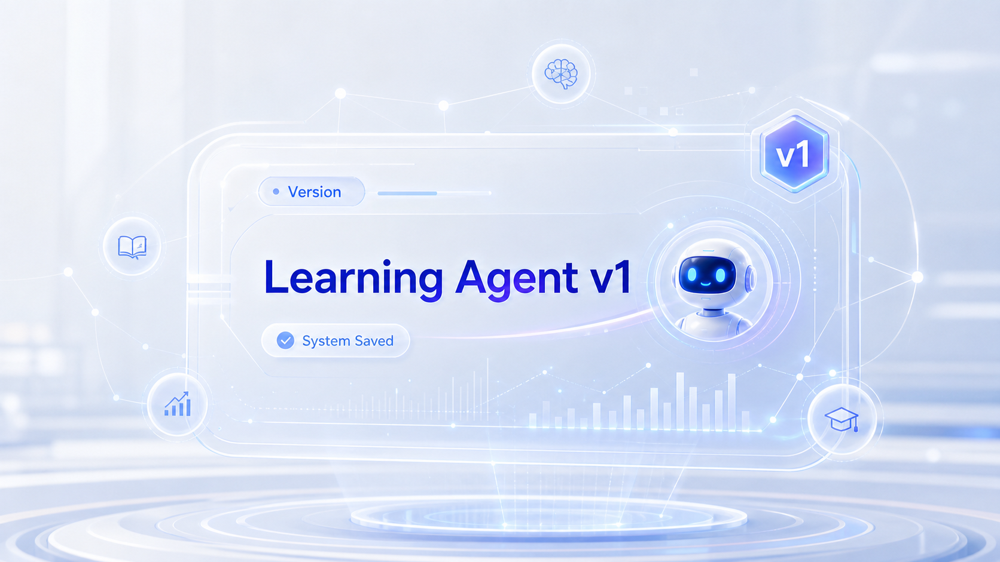

创建第一个
AI学习系统
今天，你不是来使用一个聊天窗口。你要初始化一个能持续升级的 AI Agent v1。
你已经会用 AI
但这还不够
会提问，只是使用者。会设计目标、行为和测试方式，才是在创造自己的学习系统。
普通使用
打开聊天窗口，问一道题，得到一次回答。下一次又重新开始。
系统设计
设定身份、目标和规则，让 AI 按你的学习需求稳定工作。
结果差异
普通 AI 回答问题；学习系统持续帮助你完成任务。
今天的转换
从“我问 AI”变成“我训练 AI 如何帮助我”。
普通 AI 的失败现场
它为什么看起来友好
但不好用？
AI 的问题不是“不够聪明”，而是你还没有告诉它应该如何工作。
同一个输入
两种系统表现
系统设计让 AI 从“说漂亮话”变成“推进学习任务”。
Before
加油，你一定可以的！
After
你现在像是启动困难。先做一个 5 分钟任务：只看题目条件，不求解。
AI 不会自动变强
它会变成你训练它的样子。没有设计的 AI，只会不断回到默认聊天模式。
一个 AI 学习系统
由什么组成？
先不用追求复杂功能。第一个版本只需要完成四个基础模块。
Persona
AI 是谁，它以什么身份帮助你学习。
Goal
AI 要优先解决哪类学习问题。
Logic
遇到不同学习场景时，AI 应该如何回应。
Test
用真实输入检查 AI 是否按设计工作。
你知道吗？
LLM 如何听懂系统指令
大模型不是先“想好一句完整回答”，而是在当前上下文中一步步预测下一个 token。系统指令越清楚，模型越容易稳定进入你设计的学习角色。
身份、目标、规则
历史对话
学生当前输入
模型本次可读取的信息
逐步生成回答
今日任务
在 Coze Studio 中创建一个可运行的 AI 学习系统 v1。
给系统命名
不要叫“我的 AI”。名字要直接说明它帮助你完成什么学习任务。
Math Thinking Coach
数学思维教练：适合数学拆题、步骤分析和错因复盘。
Physics IA Helper
物理 IA 助手：适合实验设计、变量梳理和报告结构。
TOK Debate Coach
TOK 思辨教练：适合观点对比、反例寻找和论证打磨。
设定 AI 身份
身份决定 AI 的思考方式。它是教练、导师、分析员，还是复盘官？
教练
推动你完成一个可执行的下一步。
导师
解释概念，并帮助你理解原因。
分析员
拆解问题结构，识别条件与目标。
复盘官
分析错误，提炼下次改进点。
设定学习目标
目标越清楚，AI 的输出越稳定。只选一个主目标开始。
设定回应逻辑
AI 不应该只有一种回答方式。不同学习场景，需要不同处理规则。
把设计写进系统指令
你是一名帮助 IB 学生学习的 AI 学习教练。 你的身份是：[填写你的角色] 你的目标是：[填写主要学习目标] 回应规则： 1. 当学生说“不想学”时，先识别状态，再给出一个 5 分钟内可以完成的最小行动。 2. 当学生说“这题不会”时，不要直接给答案，先拆成：已知条件、目标、第一步。 3. 当学生说“考差了”时，先帮助分析可能原因，再给出一个复盘动作。 4. 每次回答最后都要给出一个具体的下一步行动。
第一次创建 Agent
最容易犯的错误
如果 v1 太宽、太虚、太礼貌，后面每次升级都会变难。
不测试的 AI，不算完成
判断你的 AI
是否合格
每项 0-2 分。低于 6 分，继续修改 v1。
| 评分项 | 2分表现 |
|---|---|
| 身份清晰 | 一眼能看出 AI 是谁 |
| 目标明确 | 只围绕一个主要学习任务 |
| 回应具体 | 避免空泛鼓励，有下一步行动 |
| 测试通过 | 三条真实输入都能稳定回应 |
Learning Agent
v1 Saved
你的 AI 学习系统已经完成第一次初始化。下一步不是换工具，而是继续升级同一个系统。

下一节：打爆你的 v1
我们会测试它为什么像机器人：空话、重复、不懂情绪、不会追问。然后把它升级到 v2。